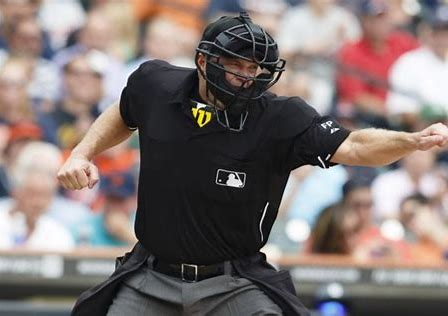

Why Human Umpires Matter
Baseball has long relied on human umpires to call balls and strikes. While technology offers precision, umpires bring experience, judgment, and tradition to the game.
Learn More About the Strike Zone
Ever wondered how umpires decide if a pitch is a ball or a strike? Click here to learn more about the strike zone!